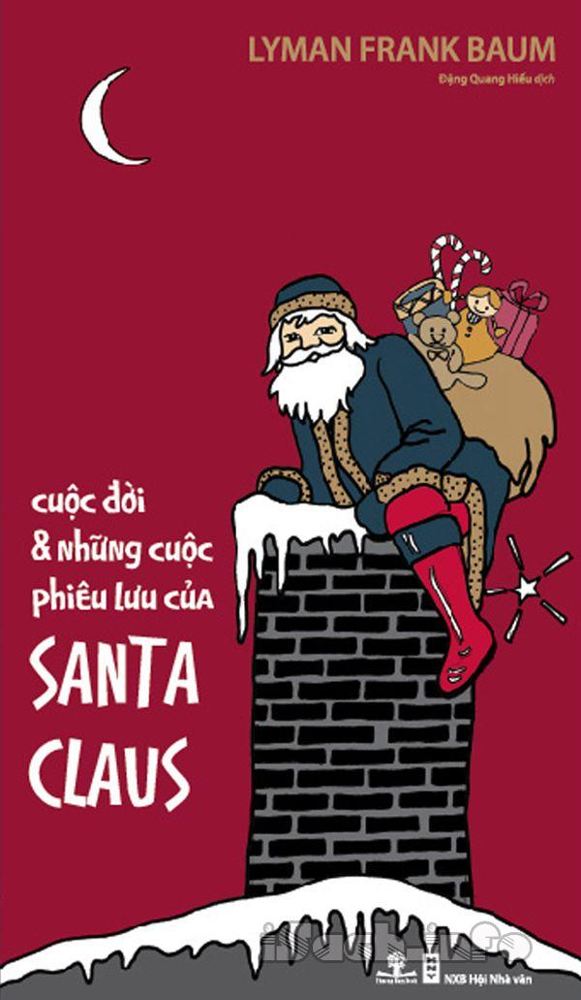

« Back
Cuộc Đời Và Những Cuộc Phiêu Lưu Của Ông Già Noel
By Lyman Frank Baum

Mở Đầu.
Phần I : Tuổi Thơ - Chương Một : Burzee.
Chương Hai : Đứa Con Của Rừng.
Chương Ba : Làm Con Nuôi.
Chương Bốn : Claus.
Chương Năm : Thần Rừng.
Chương Sáu : Claus Phát Hiện Ra Loài Người.
Chương Bảy : Claus Rời Khỏi Rừng.
Phần Hai : Trưởng Thành - Chương Một : Thung Lũng Cười.
Chương Hai : Claus Đã Làm Món Đồ Chơi Đầu Tiên Như Thế Nào.
Chương Ba : Các Ryl Đã Tô Màu Đồ Chơi Như Thế Nào.
Chương Bốn : Làm Sao Mà Bé Mayrie Lại Sợ Hãi.
Chương Năm : Bessie Blithesom Đến Thung Lũng Cười Như Thế Nào.
Chương Sáu : Sự Độc Ác Của Loài Awgwa.
Chương Bảy : Trận Chiến Vĩ Đại Giữa Thiện Và Ác.
Chương Tám : Hành Trình Đầu Tiên Với Hươu Sừng Tấm.
Chương Chín : “Santa Claus!”.
Chương Mười : Đêm Noel.
Chương Mười Một : Những Chiếc Bít Tất Đầu Tiên Đã Được Treo Ở Lò Sưởi Như Thế Nào.
Chương Mười Hai : Cây Thông Noel Đầu Tiên.
Phần Ba : Tuổi Già - Chương Một : Chiếc Áo Choàng Bất Tử.
Chương Hai : Khi Thế Giới Già Đi.
Chương Ba : Những Người Đại Diện Của Santa Claus.